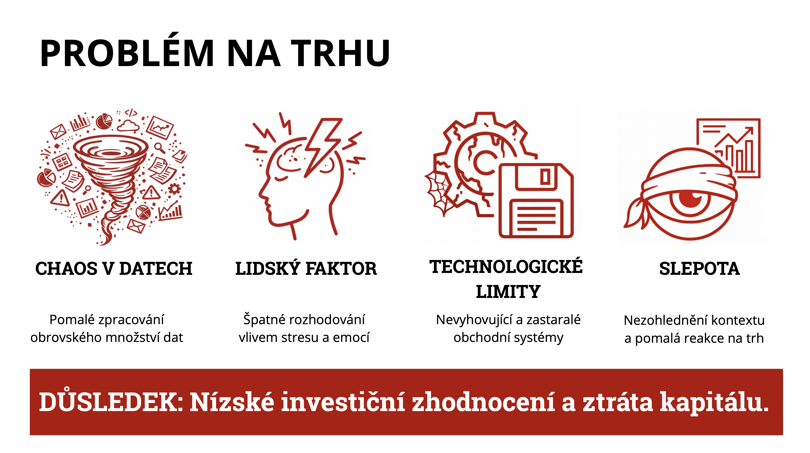

Finanční trhy dnes generují obrovské množství dat.
Makroekonomické zprávy, geopolitika, sociální sítě, fundamentální data i technická data.
Pro člověka je prakticky nemožné všechna tato data rychle zpracovat a správně interpretovat.
Navíc zde působí lidský faktor — stres, emoce a kognitivní zkreslení.
Současné obchodní systémy jsou často technologicky zastaralé a nedokážou pracovat s kontextem.
Výsledkem je nízké zhodnocení kapitálu a časté investiční chyby.